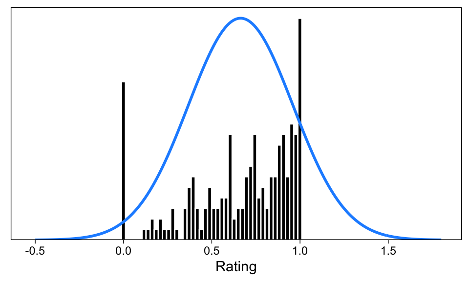
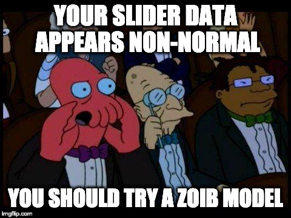
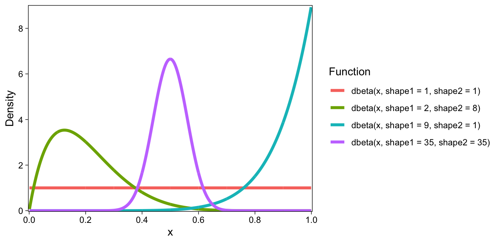
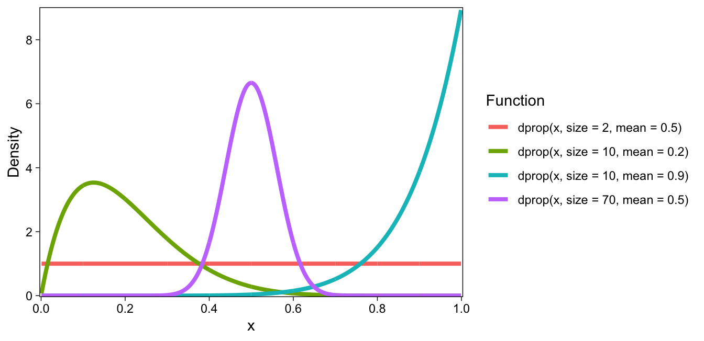
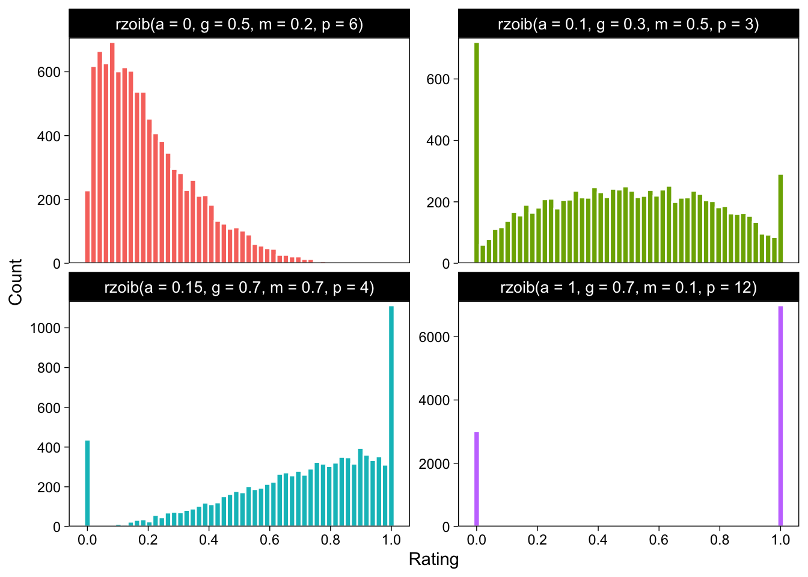
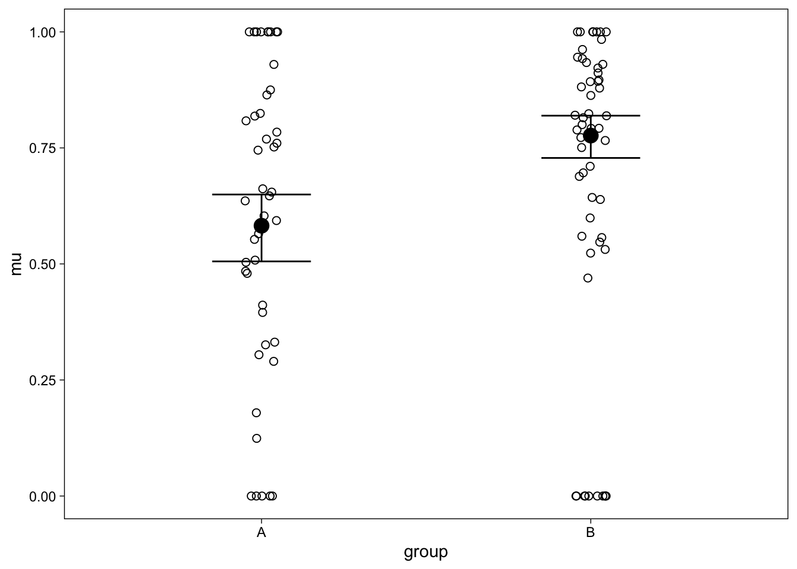
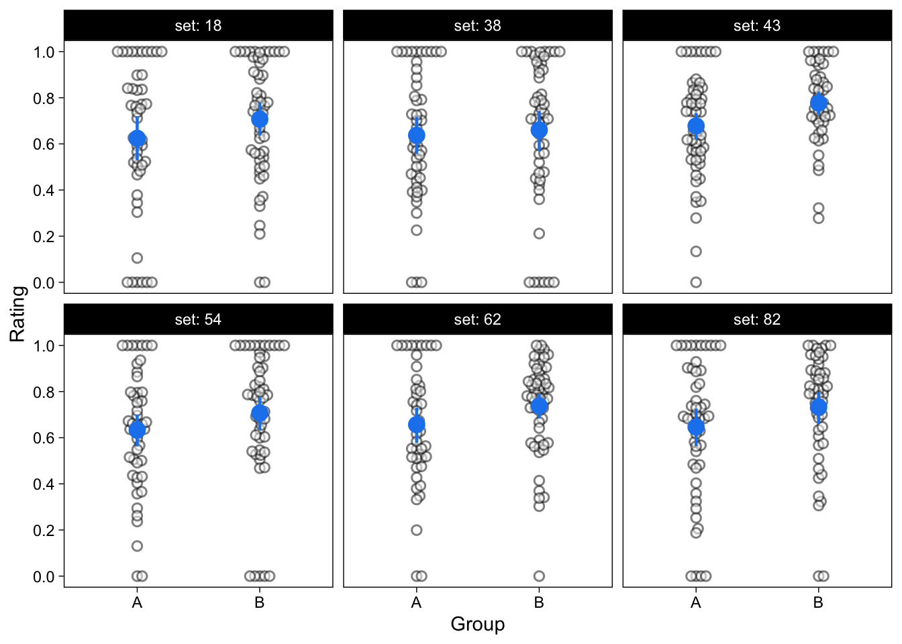
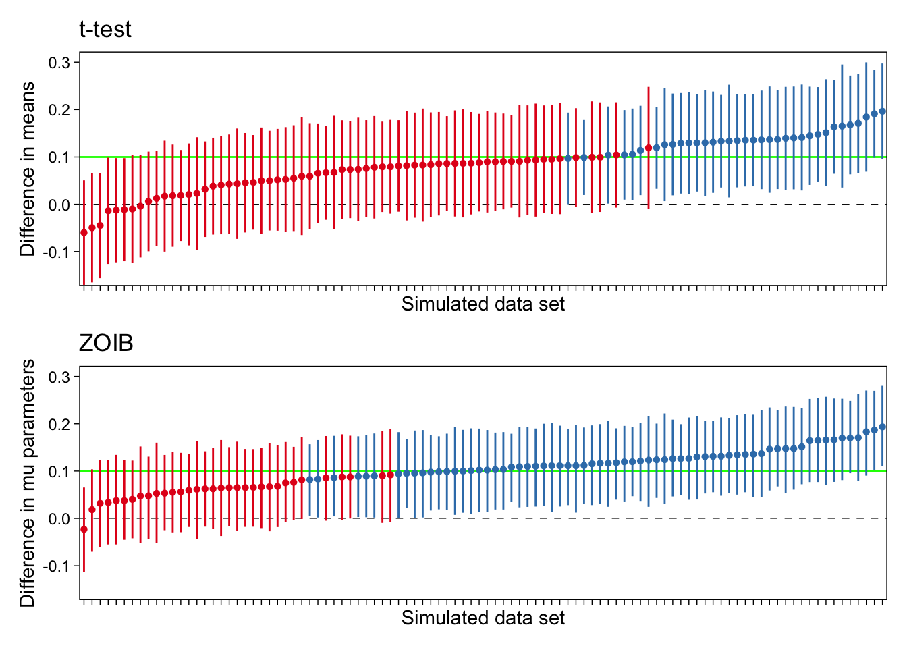

![]()
Introduction
In psychological experiments, subjective responses are often collected using two types of response scales: ordinal and visual analog scales. These scales are unlikely to provide normally distributed data. However, researchers often analyze responses from these scales with models that assume normality of the data.1
Ordinal scales, of which binary ratings are a special case, provide ordinal data and are thus better analyzed using ordinal models (Bürkner and Vuorre 2019; Liddell and Kruschke 2018).
Analog scales, also known as slider scales, are also unlikely to provide normally distributed responses because the scale is bounded at the low and high ends. These responses also tend to be skewed. It is common for slider responses to bunch at either end of the slider scale, potentially making the deviation from normality more severe.
For example, Figure 1 shows a slider scale in action. (I found this random example with a simple internet search at https://blog.surveyhero.com/2018/09/03/new-question-type-slider/). In experiments using slider scales, subjects are typically instructed to use their mouse to drag a response indicator along a horizontal line, and/or click with a mouse on a point of the scale that matches their subjective impression. Sometimes these responses are provided on paper, where subjects are asked to bisect a line at a point that matches their subjective feeling (e.g. halfway between “Leisure” and “Money” if they are subjectively equally important.)
These analog ratings are sometimes thought to be ‘better’ than discrete ordinal ratings (Likert item responses) because of the greater resolution of the slider scale. The scale’s resolution is limited only by the resolution of the monitor: For example, if the rating scale is 100 pixels wide, there are 100 possible values for the ratings. It is not unthinkable that such ratings can be considered continuous between the low and high endpoints. However, they are often not well described by the normal distribution.
Normal model of slider ratings
Consider Figure 2. This figure shows 200 simulated ratings on a [0, 1] slider scale (meaning that any value between 0 and 1, inclusive of the endpoints, is possible). I have also superimposed a blue curve of the best-fitting normal density on the histogram. The two most notable non-normal features of these data are that they are bounded at 0 and 1 where the data appears to “bunch”, and (possibly) skewed. Of course, these data were simulated; experience with slider scales tells me, however, that this histogram is not unrepresentative of such ratings.

While the height of the blue curve is not comparable to the heights of the bars (one represents a density, the other counts of observations in rating bins), it should be apparent that features of the rating scale data make the blue normal curve a poor representation of the data.
First, the skew apparent in the data is not captured by the normal density curve. Second, and perhaps more important, the blue curve does not respect the 0 and 1 boundaries of the slider scale data.
Focus on this latter point: We can see that the blue curve assigns density to areas outside the possible values: The model predicts impossible values with alarming frequency. Second, the boundary values 0.0 and 1.0 do not receive any special treatment under the normal model, but we can see that the data are bunched at the boundaries. The great frequency of responses at 0.0 and 1.0 leads to large prediction errors from the normal model of these data.
In other words, (simulated) subjects tend to give many extreme ratings. This is especially apparent in the low end of the rating scale, where the continuous spread of scores tapers off, but then there is a large spike of ratings at zero. The normal model misses these features of the data, and may therefore lead to unrepresentative estimates of the data generating process, and even erroneous conclusions.
Toward a better model
More generally, if your goal is to predict cognition and behavior (Yarkoni and Westfall 2017), a model that is obviously a poor representation of your data—in terms of having such a poor predictive utility—should not be your first choice for data analysis.
Admittedly, the data in Figure 2 were simulated, and it remains an empirical question as to how common these features are in real data, and how severe these issues are to normal models (t-test, ANOVA, correlation, etc.).
Nevertheless, it would be desirable to have an accessible data-analytic model for slider scale data, whose assumption better match observed features of the data. Here, I introduce one such model—the zero-one-inflated beta (ZOIB) model—and show how it can be applied to real data using the R package brms (Bürkner 2017). I also compare this model to standard analyses of slider scale data and conclude that the ZOIB can provide more detailed and accurate inferences from data than its conventional counterparts.

The zero-one-inflated beta model
Above, we established—rather informally—that normal models may be less than optimal for slider scale data. Of course, no model is the correct model of such data, but it would be desirable to use a model that best represents the data under study.
The model for analysis of slider scale data discussed here has been called the “zero-one-inflated beta” model, or ZOIB (Liu and Kong 2015). It is a model of data in the closed [0, 1] interval, and has two components: A beta distribution for responses in the closed (0, 1) interval, and a bernoulli distribution for the binary {0, 1} responses. Under this model, predictors can affect either or both the continuous and binary responses, the proportion of binary responses, or the spread of the continuous ratings.
To understand ZOIB, let’s start with a closer look at the theoretical beta density.
The beta distribution
The beta distribution used in beta regression (Ferrari and Cribari-Neto 2004) is a model of data in the open (0, 1) interval. (i.e. all values from 0 to 1, but not 0 and 1 themselves, are permitted.)
The beta distribution typically has two parameters, which in R are called shape1 and shape2. Together, they determine the location, spread, and skew of the distribution. Four example beta densities are shown in Figure 3. Using R’s dbeta(), I drew four curves corresponding to beta densities with different shape1 and 2 parameters.

This default parameterization is useful, for example, as a prior distribution for proportions: The shape1 and shape2 parameters can define the prior number of zeros and ones, respectively. For example, in the above figure, dbeta(x, shape1 = 1, shape2 = 1) results in a uniform prior over proportions, because the prior zeros and ones are 1 each.
However, for our purposes, it is more useful to parameterize the beta distribution with a mean and a precision. To convert the former parameterization to mean (which we’ll call \(\mu\) (mu)) and precision (\(\phi\) (phi)), the following formulas can be used
\[\begin{align*} \mbox{shape1} &= \mu \phi \\ \mbox{shape2} &= (1 - \mu)\phi \end{align*}\]
(This parameterization is provided in R in the PropBeta functions from the extraDist package, which calls the precision parameter, or \(\phi\), size.) Redrawing the figure from above with this parameterization using the dprop() function, we get the figure below.

dprop()).Shown above are four density functions of the beta family, whose precision and mean are varied. The first (red line) is a beta distribution with precision = 1, and mean = 0.5. It results in a uniform distribution. If a subject gave random slider scale responses, they might look much like this distribution (any rating is equally probably as any other rating).
The second beta distribution (green line) has precision 10, and mean 0.2. It is heavily skewed to the right. The third distribution (teal line) has precision 10, and a mean of 0.9. The fourth one, most similar to a normal distribution, has precision 70 and mean 0.50 (purple line).
In beta regression, this family of distributions is used to model observations, and covariates can have effects on both the mean and precision parameters.
However, beta regression only allows outcomes in the open (0, 1) interval. We know that slider scales often result in a bunching of values at the boundaries, and these boundary values might be informative of the participants’ cognition and behavior. To handle these extreme values, we can add a zero-one inflation process to the beta distribution.
Zero-one inflation
The zero-one-inflated beta (ZOIB) adds a separate discrete process for the {0, 1} values, using two additional parameters. Following convention, we shall call them \(\alpha\) (alpha) and \(\gamma\) (gamma). These parameters describe the probability of an observation being a 0 or 1 (\(\alpha\)), and conditional on that, whether the observation was 1 (\(\gamma\)).
In other words, the model of outcomes under ZOIB is described by four parameters. The first is \(\alpha\), the probability that an observation is either 0 or 1. (Thus, \(1-\alpha\) is the probability of a non-boundary observation.) If an observation is not 0 or 1, the datum is described by the beta distribution with some mean \(\mu\) and precision \(\phi\). If an observation is 0 or 1, the probability of it being 1 is given by \(\gamma\) (just like your usual model of binary outcomes, e.g. logistic regression). So you can think of the model as a kind of mixture of beta and logistic regressions, where the \(\alpha\) parameter describes the mixing proportions. The mathematical representation of this model is given in this vignette (Bürkner 2017).
To illustrate, I wrote a little function rzoib() that takes these parameters as arguments, and generates n random draws. Here is a histogram of 1k samples from four ZOIB distributions with various combinations of the parameters:

Take the first (red) one. \(\alpha\) was set to zero, and therefore there are no observations exactly at zero or 1. Because \(\alpha = 0\), it doesn’t matter that \(\gamma\) was set to 0.5. \(\gamma\) is the conditional one probability, given that the observation was 0 or 1. Therefore, the first histogram only contains draws from a beta distribution with mean = 0.2, and precision = 6.
Next, take a look at the second (green) histogram. Here, \(\alpha = 0.1\), so 10% of the observations will be either 0 or 1. Of these 10%, 30% are ones (\(\gamma = 0.3\)). The bulk of the distribution, 90%, are draws from a beta distribution with a mean = 0.5, and precision = 3.
The bottom two histograms are two more combinations of the four parameters. Try to understand how their shapes are explained by the specific parameter combinations.
In summary, ZOIB is a reasonable model of slider scale data that can capture their major features, has support for the entire [0, 1] range of data, and does not assign density to impossible values (unlike the normal model). It also has an intuitive way of dealing with the boundary values as a separate process, thus providing more nuanced information about the outcome variable under study.
Next, we discuss a regression model with ZOIB as the data model: We are most interested in how other variables affect or relate to the outcome variables under study (slider scale ratings). By modeling the four parameters of the ZOIB model on predictors, ZOIB regression allows us to do just that.
ZOIB regression
In this example, we examine the ZOIB model in the context of one binary predictor variable (Group A vs B, a “between subjects” manipulation).
Example data
To illustrate the ZOIB model in action, I simulated a data set of 100 ratings from two groups, A and B. These data are shown in Figure 4.
We are interested in the extent to which Group A’s ratings differ from Group B’s ratings. It is common practice to address this question with a t-test, treating the ratings as normally distributed within each group. I compared the two groups’ means with a t-test: The difference was not statistically significant (B - A = 0.06, 95%CI = [-0.07, 0.2], p=0.340). I’ve also heard that you can do something called a Mann-Whitney U test, or a Kruskal-Wallis test when you have a categorical predictor and don’t want to assume a parametric form for your outcomes. I tried those as well. Neither of these nonparametric tests were significant (p=0.226; p=0.225). I therefore concluded that I was unable to reject the null hypothesis that Group A and Group B’s population means are not different.
But as can be seen from Figure 2, the normal model makes unreasonable assumptions about these ratings. We see in Figure 4 that there are many non-normal features in this example data set; e.g. many values are bunched at 0.0 and 1.0. Let’s fit the ZOIB model on these data, and see if our conclusions differ. Spoiler alert: they do.
The model
We will model the data as ZOIB, and use group as a predictor of the mean and precision of the beta distribution, the zero-one inflation probability \(\alpha\), and the conditional one-inflation probability \(\gamma\). In other words, in this model group may affect the mean and/or precision of the assumed beta distribution of the continuous ratings (0, 1), and/or the probability with which a binary rating is given, and/or the probability that a binary rating is 1. How do we estimate this model?
It might not come as a surprise that we estimate the model with bayesian methods, using the R package brms (Bürkner 2017). Previously, I have discussed how to estimate signal detection theoretic models, “robust models”, and other multilevel models using this package. I’m a big fan of brms because of its modeling flexibility and post-processing functions: With concise syntax, you can fit a wide variety of possibly nonlinear, multivariate, and multilevel models, and analyze and visualize the models’ results.
Let’s load the package, and start building our model.
library(brms)The R formula syntax allows a concise representation of regression models in the form of response ~ predictors. For a simple normal (i.e. gaussian) model of the mean of Ratings as a function of group, you could write Ratings ~ group, family = gaussian. However, we want to predict the four parameters of the ZOIB model, and so will need to expand this notation.
The brms package allows modeling more than one parameter of an outcome distribution. Specifically, we want to predict so-called “distributional parameters”, and bf() allows predicting them in their own formulas. Implicitly, Ratings ~ group means that you want to model the mean of Ratings on group. Therefore, to model \(\phi\), \(\alpha\), and \(\gamma\), we will give them their own regression formulas within a call to bf():
zoib_model <- bf(
Rating ~ group,
phi ~ group,
zoi ~ group,
coi ~ group,
family = zero_one_inflated_beta()
)The four sub-models of our model are, in order of appearance: 1. the model of the beta distribution’s mean (read, “predict Rating’s mean from group”). Then, 2. the model of phi; the beta distribution’s precision. 3. zoi is the zero-one inflation (\(\alpha\)); that is, we model the probability of a binary rating as a function of group. 4. coi is the conditional one-inflation: Given that a response was {0, 1}, the probability of it being 1 is modelled on group.
As is usual in R’s formula syntax, the intercepts of each of these formulas are implicitly included. (To make intercepts explicit, use e.g. Rating ~ 1 + group.) Therefore, this model will have 8 parameters; the intercepts are Group A’s mean, phi, zoi, and coi. Then, there will be a Group B parameter for each of them, indicating the extent to which the parameters differ for Group B versus Group A.
If group has a positive effect on (the mean of) Rating, we may conclude that the continuous rating’s mean differs as function of Group. On the other hand, if coi is affected by group, Group has an effect on the binary {0, 1} ratings. If group has no effects on any of the parameters, we throw up our hands and design a new study.
Finally, we specified family = zero_one_inflated_beta(). Just like logistic regression, ZOIB regression is a type of generalized linear model. Therefore, each distributional parameter is modeled through a link function. The mean, zoi, and coi parameters are modeled through a logit link function. Phi is modeled through a log link function. These link functions can be changed by giving named arguments to zero_one_inflated_beta(). It is important to keep in mind the specific link functions, we will need them when interpreting the model’s parameters.
To estimate this model, we pass the resulting zoib_model to brm(), with a data frame from the current R environment, 4 CPU cores for speed, and a file argument to save the resulting model to disk. The last two arguments are optional.
fit <- brm(
formula = zoib_model,
data = dat,
cores = 4,
file = "brm-zoib"
)brms estimates the regression model using bayesian methods: It will return random draws from the parameters’ posterior distribution. It takes less than a minute to draw samples from this model. Let’s then interpret the estimated parameters (i.e. the numerical summaries of the posterior distribution):
summary(fit)
## Family: zero_one_inflated_beta
## Links: mu = logit; phi = log; zoi = logit; coi = logit
## Formula: Rating ~ group
## phi ~ group
## zoi ~ group
## coi ~ group
## Data: dat (Number of observations: 100)
## Draws: 4 chains, each with iter = 2000; warmup = 1000; thin = 1;
## total post-warmup draws = 4000
##
## Population-Level Effects:
## Estimate Est.Error l-95% CI u-95% CI Rhat Bulk_ESS Tail_ESS
## Intercept 0.33 0.16 0.03 0.64 1.00 7221 2600
## phi_Intercept 1.50 0.24 1.00 1.94 1.00 6306 3106
## zoi_Intercept -0.80 0.32 -1.44 -0.18 1.00 7341 2983
## coi_Intercept 0.62 0.56 -0.40 1.75 1.00 6324 3166
## groupB 0.91 0.21 0.50 1.32 1.00 6770 2984
## phi_groupB 0.48 0.33 -0.15 1.14 1.00 5750 2654
## zoi_groupB 0.08 0.43 -0.75 0.91 1.00 7812 3178
## coi_groupB -0.87 0.75 -2.35 0.52 1.00 6093 2866
##
## Draws were sampled using sampling(NUTS). For each parameter, Bulk_ESS
## and Tail_ESS are effective sample size measures, and Rhat is the potential
## scale reduction factor on split chains (at convergence, Rhat = 1).First, the summary of this model prints a paragraph of information about the model, such as the outcome family (ZOIB), link functions, etc. The regression coefficients are found under the “Population-Level Effects:” header. The columns of this section are “Estimate”, the posterior mean or point estimate of the parameter. “Est.Error”, the posterior standard deviation, or so called standard error of the parameter. Then, the lower and upper limit of the 95% Credible Interval. The two last columns are diagnostics of the model fitting procedure.
The first four rows of this describe the parameters for the baseline group (Group A). Intercept is the logit-transformed mean of the beta distribution for Group A’s ratings (the subset of ratings that were (0, 1)). Next, phi_Intercept describes the precision of the beta distribution fitted to Group A’s slider responses, on the scale of the (log) link function. zoi_Intercept is the zero or one inflation of Group A’s data, on the logit scale. coi_Intercept is the conditional one inflation; out of the 0 or 1 ratings in Group A’s data, describing the proportion of ones (out of the 0/1 responses)?
These parameters are described on the link scale, so for each of them, we can use the inverse link function to transform them to the response scale. Precision (phi_Intercept) was modeled on the log scale. Therefore, we can convert it back to the original scale by exponentiating. For the other parameters, which were modeled on the logit scale, we can use the inverse, which is plogis().
However, before converting the parameters, it is important to note that the estimates displayed above are summaries (means, quantiles) of the posterior draws of the parameters on the link function scale. Therefore, we cannot simply convert the summaries. Instead, we must transform each of the posterior samples, and then re-calculate the summaries. The following code accomplishes this “transform-then-summarize” procedure for each of the four parameters:
posterior_samples(fit, pars = "b_")[,1:4] %>%
mutate_at(c("b_phi_Intercept"), exp) %>%
mutate_at(vars(-"b_phi_Intercept"), plogis) %>%
posterior_summary() %>%
as.data.frame() %>%
rownames_to_column("Parameter") %>%
kable(digits = 2) | Parameter | Estimate | Est.Error | Q2.5 | Q97.5 |
|---|---|---|---|---|
| b_Intercept | 0.58 | 0.04 | 0.51 | 0.66 |
| b_phi_Intercept | 4.59 | 1.10 | 2.72 | 6.99 |
| b_zoi_Intercept | 0.31 | 0.07 | 0.19 | 0.45 |
| b_coi_Intercept | 0.64 | 0.12 | 0.40 | 0.85 |
We can then interpret these summaries, beginning with b_Intercept. This is the estimated mean of the beta distribution fitted to Group A’s (0, 1) rating scale responses (with its standard error, lower- and upper limits of the 95% CI). Then, b_Phi_Intercept is the precision of the beta distribution. zoi is the zero-one inflation, and coi the conditional one inflation.
To make b_zoi_Intercept concrete, we should be able to compare its posterior mean to the observed proportion of 0/1 values in the data:
mean(dat$Rating[dat$group=="A"] %in% 0:1) %>% round(3)
## [1] 0.311Above we calculated the proportion of zeros and ones in the data set, and found that it matches the estimated value. Similarly, for coi, we can find the corresponding value from the data:
mean(dat$Rating[dat$group=="A" & dat$Rating %in% 0:1] == 1) %>%
round(3)
## [1] 0.643Let’s get back to the model summary output. The following four parameters are the effects of being in group B on these parameters. Most importantly, groupB is the effect of group B (versus group A) on the mean of the ratings’ assumed beta distribution, in the logit scale. Immediately, we can see that the parameter’s 95% Credible Interval does not include zero. Traditionally, this parameter would be called “significant”; group B’s (0, 1) ratings are on average greater than group A’s.
To transform this effect back to the data scale, we can again use plogis(). However, it is important to keep in mind that the effect’s size on the original scale depends on the intercept, getting smaller as the intercept increases (just like in any other generalized linear model.) The following bit of code transforms this effect and its uncertainty back to the original scale.
h <- c("B - A" = "plogis(Intercept + groupB) = plogis(Intercept)")
hypothesis(fit, h)
## Hypothesis Tests for class b:
## Hypothesis Estimate Est.Error CI.Lower CI.Upper Evid.Ratio Post.Prob Star
## 1 B - A 0.19 0.05 0.1 0.28 NA NA *
## ---
## 'CI': 90%-CI for one-sided and 95%-CI for two-sided hypotheses.
## '*': For one-sided hypotheses, the posterior probability exceeds 95%;
## for two-sided hypotheses, the value tested against lies outside the 95%-CI.
## Posterior probabilities of point hypotheses assume equal prior probabilities.The data were simulated with the rzoib() function, and I set \(\alpha = 0.25, \gamma = 0.5, \mu = 0.6 + 0.15\mbox{groupB}, \phi = 5\). Therefore, the results of the t-tests and nonparametric tests were misses; a true effect was missed. On the other hand, the ZOIB regression model detected the true effect of group on the beta distribution’s mean.
Finally, let’s visualize this key finding using the conditional_effects() function from brms.
plot(
conditional_effects(fit, dpar = "mu"),
points = TRUE,
point_args = list(width = .05, shape = 1)
)
Comparing Figure 5 to Figure 4 reveals the fundamental difference of the normal t-test model, and the ZOIB model: The ZOIB regression (Figure 5) has found a large difference between the continuous part of the slider ratings’ means because it has treated the data with an appropriate model. By conflating the continuous and binary data, the t-test did not detect this difference.
In conclusion, this example showed that ZOIB results in more informative, and potentially more accurate, inferences from analog scale (“slider”) data. Of course, in this simulation we had the benefit of knowing the true state of matters: The data were simulated from a ZOIB model. Nevertheless, we have reasoned that by respecting the major features of slider scale data, the ZOIB is a more accurate representation of it, and was therefore able to detect a difference where the t-test did not. Next, I put this conjecture to a test by conducting a small simulation study.
Simulation: Compare ZOIB and t-test performances
To compare the performance of the t-test and ZOIB in a little bit more detail, I conducted a small simulation study. I simulated 100 data sets of 200 ratings from two independent groups, from the ZOIB model (100 ratings per group). I set \(\alpha = 0.2, \gamma = 0.7, \mu = 0.6 + 0.1\mbox{groupB}, \phi = 5\); that is, there was a small effect of group on the mean of the beta distribution, and all other parameters were constant across groups. A sample of the resulting data sets is shown in Figure 6.

I first conducted an independent samples, unequal variances t-test on each of the 100 simulated data sets, comparing the two groups’ mean ratings. 35% of these t-tests were significantly positive at the .05 level. That is, the power of the t-test in this simulation was about 35%. (Uncertainty in this value is moderate, because I only did 100 simulation runs.)
I then estimated the ZOIB model for each of the 100 simulated data sets. Statistical significance does not play a role in Bayesian statistics, but to most easily compare the results of these two models, I calculated the proportion of simulations for which the estimated Group on \(\mu\) effect’s 95% Credible Interval was entirely above zero. If a 95% CI does not include zero, disrespecting the philosophical differences of bayesian and frequentist statistics, I may say that the estimate is “significant”.
This parameter was significantly greater than zero in 66% of the ZOIB models estimated on the same 100 simulated data sets. That is, the power of this model to detect an effect was much greater than the power of the t-test. These results are illustrated in Figure 7.

As can be seen in this figure, in this particular setup, the t-tests severely underperformed in detecting a true effect when compared to the ZOIB model. Of course, this is to be expected, because the data were generated from the ZOIB model.
Out there in the wild, which of these models is closer to the true data generating process for slider scale ratings? Normal models, or ZOIB? (Or, most likely, some other class of models?) As we have seen, normal models may be poor representations of bounded and skewed slider scale data. It is therefore possible that the routine use of normal models in analyzing slider scale data can result in missing true effects at a rate higher than indicated by conventional power analyses.
Discussion
I have not extensively reviewed the performance of the ZOIB model in this blog post. Neither did I analyze real slider scale data. Therefore, I can not and would not recommend exclusively favoring the ZOIB model over normal models for the analysis of slider scale data. However, I can recommend at least trying ZOIB for your own slider scale data, and thinking about what models might best fit your data if they appear non normal.
Limitations
There are many limitations to the current discussion, and the simulation studies should be considerably expanded to more realistic and variable situations.
One limitation of the ZOIB model might be what I here discussed as its main benefit. ZOIB separates the binary and continuous processes, such that a predictor’s effect on one or both of them are independent in the model. However, it is likely that these two processes are somehow correlated. Thus, ZOIB does not give only one “effect” of a predictor on the ratings, but two, one for the continuous part, and one for the binary. By not getting a single effect, if nothing else, the model is more complex and probably more difficult to analyze and/or explain.
Further reading
The beta regression model has previously been discussed as a reasonable model of data in the open (0, 1) interval (Ferrari and Cribari-Neto 2004). It’s application in psychological studies has also been discussed by (Smithson and Verkuilen 2006; see also Verkuilen and Smithson 2012). These earlier papers recommended that values at the 0 and 1 boundaries be somehow transformed to make the data suitable for the model, but transforming the data such that a model can be fitted seems like a bad idea.
Mixtures of beta and discrete models were discussed by Ospina and Ferrari (2008), and an R package for estimation of the ZOIB model was introduced by Liu and Kong (2015). Liu and Eugenio (2018) found that ZOIB models are better estimated with Bayesian methods than with maximum likelihood methods.
More information about the brms package can be found in Bürkner (2017), and in the excellent vignettes at https://cran.rstudio.com/web/packages/brms/.
References
Bürkner, Paul-Christian. 2017. “Brms: An R Package for Bayesian Multilevel Models Using Stan.” Journal of Statistical Software 80 (1): 1–28. https://doi.org/10.18637/jss.v080.i01.
Bürkner, Paul-Christian, and Matti Vuorre. 2019. “Ordinal Regression Models in Psychology: A Tutorial.” Advances in Methods and Practices in Psychological Science 2 (1): 77–101. https://doi.org/10.1177/2515245918823199.
Ferrari, Silvia, and Francisco Cribari-Neto. 2004. “Beta Regression for Modelling Rates and Proportions.” Journal of Applied Statistics 31 (7): 799–815. https://doi.org/10.1080/0266476042000214501.
Liddell, Torrin M., and John K. Kruschke. 2018. “Analyzing Ordinal Data with Metric Models: What Could Possibly Go Wrong?” Journal of Experimental Social Psychology 79 (November): 328–48. https://doi.org/10.1016/j.jesp.2018.08.009.
Liu, Fang, and Evercita C Eugenio. 2018. “A Review and Comparison of Bayesian and Likelihood-Based Inferences in Beta Regression and Zero-or-One-Inflated Beta Regression.” Statistical Methods in Medical Research 27 (4): 1024–44. https://doi.org/10.1177/0962280216650699.
Liu, Fang, and Yunchuan Kong. 2015. “Zoib: An R Package for Bayesian Inference for Beta Regression and Zero/One Inflated Beta Regression.” The R Journal 7 (2): 34–51. https://journal.r-project.org/archive/2015/RJ-2015-019/index.html.
Ospina, Raydonal, and Silvia L. P. Ferrari. 2008. “Inflated Beta Distributions.” Statistical Papers 51 (1): 111. https://doi.org/10.1007/s00362-008-0125-4.
Smithson, Michael, and Jay Verkuilen. 2006. “A Better Lemon Squeezer? Maximum-Likelihood Regression with Beta-Distributed Dependent Variables.” Psychological Methods 11 (1): 54–71. https://doi.org/10.1037/1082-989X.11.1.54.
Verkuilen, Jay, and Michael Smithson. 2012. “Mixed and Mixture Regression Models for Continuous Bounded Responses Using the Beta Distribution.” Journal of Educational and Behavioral Statistics 37 (1): 82–113. https://doi.org/10.3102/1076998610396895.
Yarkoni, Tal, and Jacob Westfall. 2017. “Choosing Prediction Over Explanation in Psychology: Lessons From Machine Learning.” Perspectives on Psychological Science 12 (6): 1100–1122. https://doi.org/10.1177/1745691617693393.
Footnotes
Technically, normal models assume that the residuals are normally distributed. I will keep referring to data being normally distributed or not, for clarity.↩︎
Reuse
Citation
BibTeX citation:
@online{vuorre2019,
author = {Matti Vuorre},
title = {How to Analyze Visual Analog (Slider) Scale Data?},
date = {2019-02-18},
url = {https://vuorre.netlify.app/posts/2019-02-18-analyze-analog-scale-ratings-with-zero-one-inflated-beta-models},
langid = {en}
}
For attribution, please cite this work as:
Matti Vuorre. 2019. “How to Analyze Visual Analog (Slider) Scale
Data?” February 18, 2019. https://vuorre.netlify.app/posts/2019-02-18-analyze-analog-scale-ratings-with-zero-one-inflated-beta-models.